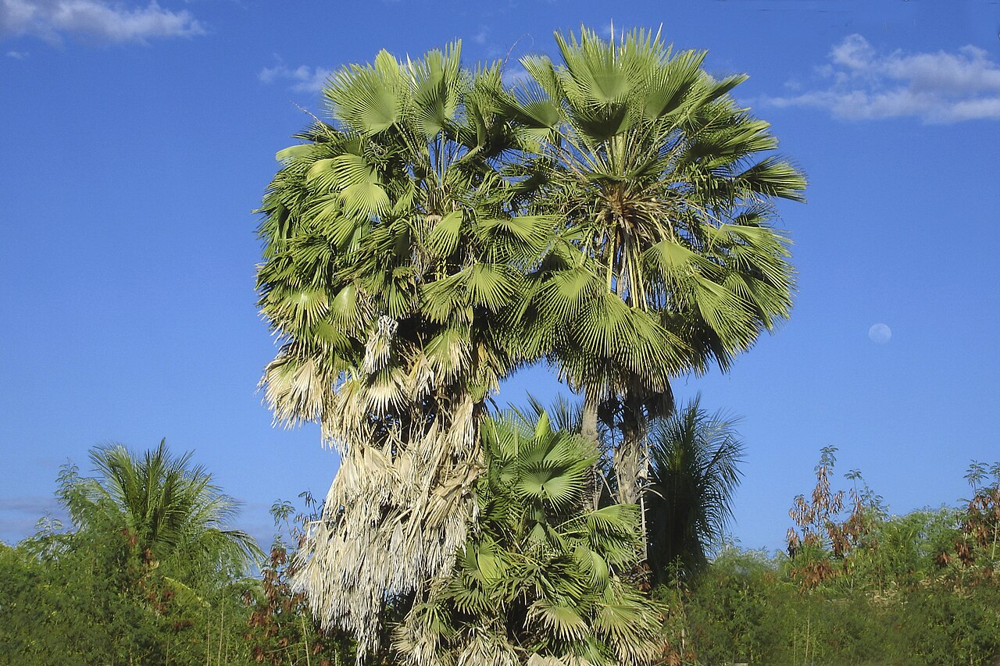

SLM Technology · Value chain

Carnaúba
Sustainable, organic extractivism of carnaúba wax and fibre

Carnaúba (Copernicia prunifera) – the “tree of life.” Photo: Tacarijus, CC BY 2.5, via Wikimedia Commons
What it is
Sustainable, organic harvest of the carnaúba palm (Copernicia prunifera) – the “tree of life” of the Northeast – for its wax (cerose powder) and fibre, following the MAPA good-practice guide (MAPA, 2015). The palm is never felled; only leaves are cut, in season (MAPA, 2015).
How it works
- Cut mature leaves (palhas) selectively in season – never fell the palm
- Dry the leaves and extract the wax powder (beneficiamento)
- Keep clean handling and records for organic recognition
- Organise collection and processing through a cooperative
Key facts
- Product
- carnaúba wax & fibre
- Use
- cosmetics, polish, food coating – a global export
- Where
- alluvial flats of PI, CE, RN
- Status
- organic extractivism (MAPA good practice)
Note
A standing-forest income: the carnaubal pays year after year only if the palms are left to keep producing.
WOCAT classification
- Measures
- VMVegetative · Management
- WOCAT group
- Natural and semi-natural forest management
- Degradation addressed
- Biological degradation
Classified per the WOCAT SLM-Technologies classification.
✦Source and links
- • MAPA – Boas Práticas: Carnaúba
- • DRIP Manual 03 – Native value chains
- • Caatinga · sustainable management
Sources (APA, 7th ed.).